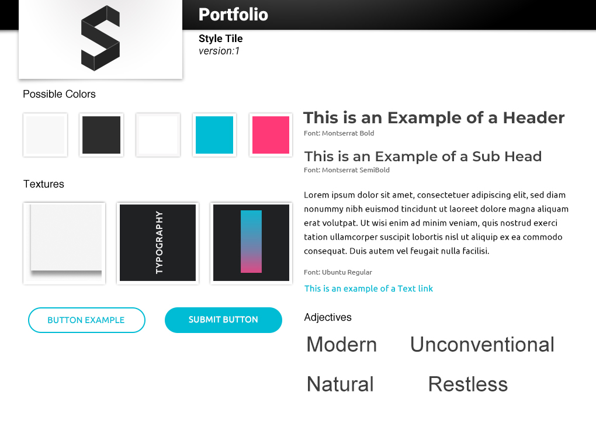

While looking at my old portfolio which was built in 2017, I got to the conclusion that it doesn’t represent my current programming knowledge as well as my UX/UI design skills.
In May, this year, I got my hands dirty and started the redesign process. Within this page, I’ll discuss the steps I took to build what you’re seeing now.
This Portfolio.
01. Previous Portfolio
Although the previous portfolio served me well, I’m now seeing it as hard-to-navigate, slow in terms of loading and overall performance, buggy and too busy. Some of the mistakes I’ve made are more obvious than others and I’ll include just a few in the following list:
- The website was designed following a desktop first approach which led to a frustrating navigation and an overcomplicated layout on mobile.
- The website was hosted on a server which has a poor response time.
- As most of the content is crowded in a single-page which doesn’t use any type of dynamic requests, the home page size is 4.5MB (gzip compressed). This page size, combined with the poor server response time mentioned above, means that the website loads in approximately 3s on a perfect connection.
- As a first-time user of the website, you might get confused as some of the elements might be considered atypical.


02. Design
After over a dozen of Medium posts, I started to get an idea of what can make a good portfolio. I created an inspiration list of portfolios built by great designers and started to design the wireframes.
My approach this time was to design mobile first so that I can structure the content in a more logical manner and most importantly, have a website that feels native on mobile devices.


The style tile creation was much more complicated than I expected as I found myself in a red pill, blue pill situation in which I simply couldn’t make a choice between the two colours. As it can be seen below, none of the “pills” won.
A high-fidelity prototype was designed using Adobe XD so that I can properly carry out usability tests.


03. Technology
A variety of software, programming languages and libraries were used to design and develop the website. As a static portfolio hosted on GitHub, the core languages used were HTML, CSS and JavaScript.
Please note that most of the code is commented and the libraries used are referenced below. For any further details, contact me.
Design
- Balsamiq For producing wireframes.
- Adobe XD For designing the prototype.
- Adobe Photoshop For modfifying images and creating the style tile.
- Adobe Illustrator For designing the logo & other vectorial graphics.
Development
- HTML
- CSS | SASS
-
JavaScript | jQuery
For manipulating the pages.
For using the libraries. - Git Version control and hosting.
Libraries
- Scrollspy Used to trigger an "active" class in the navigation.
- Moment.js Used on the landing page for the greeting message.
- ScrollReveal Used to display the content on scroll.
- Slick JavaScript carousel.
- Velocity.js Alternative animation engine to jQuery's $.animate.
- Anime.js Similar to Velocity. But used only on the landing page for comparison.
04. Summary
The main goal of my new website portfolio is to help me showcase my work as well as my development processes in a logical and user-friendly way. I aimed to not repeat the mistakes I’ve made with the previous one and to learn as much as possible from the design and development processes. Despite all of this, I do consider that the website can be improved in multiple ways and for this reason, I am working continuously on it so that I can improve your experience in any possible ways.
I value feedback so please don’t hesitate to contact me if you have any suggestions or opinions regarding my work.